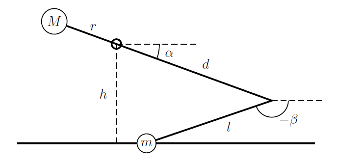
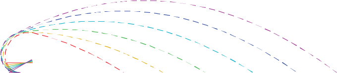

AVPM Technical Design
For our final project in Dynamics, we constructed and programmed miniature trebuchet. By using Lagrangian mechanics to solve for its equations of motion, we were able to simulate it with different initial conditions. This enabled us to control the projectile's trajectory by changing the initial height of the mass. We used computer vision to detect the location of targets and programmed the trebuchet to use this knowledge of its system dynamics to automatically aim and hit things. The entire project, from developing the system model, to designing the trebuchet, to writing the auto-targeting code, was done in about 3 weeks.
For more information, check out the video above!
A geometric model of the trebuchet with the projectile on the ground, and important lengths, angles, and masses labelled
A graphical representation of the effect initial angle has on projectile trajectory
CAD model of the final trebuchet design in Solidworks